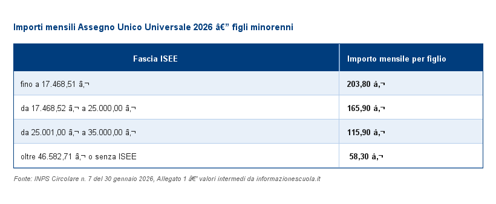

Assegno Unico e Universale per i figli a carico
A chi spetta: A tutti i nuclei familiari con figli a carico minorenni,
o maggiorenni fino a 21 anni che studiano o cercano lavoro.
Non e' richiesta attivita' lavorativa da parte del richiedente.
Importi mensili 2026
Gli importi per l'anno 2026 sono stati rivalutati del +1,4% in base all'indice ISTAT (INPS Circolare n. 7 del 30 gennaio 2026).

Come fare domanda
La domanda si presenta esclusivamente online attraverso il portale INPS, accedendo con SPID, CIE o CNS. E' necessario disporre di un ISEE in corso di validita' (DSU presentata presso un CAF o direttamente su inps.it).
La procedura si compone di 5 passi: dati del richiedente, dati dei figli, situazione ISEE, coordinate bancarie, riepilogo e invio.
All'invio viene rilasciato un numero di protocollo che attesta la ricezione della domanda.
Presenta la domanda
REPLICA DEMO — NON e' il sito INPS live.
Questa pagina riproduce fedelmente le barriere di accessibilita' documentate nei portali PA.
Fonte: docs/EVIDENCE.md. Senza chiave API il servizio di descrizione immagini girera'
su fixture registrate, non su un modello LLM dal vivo.